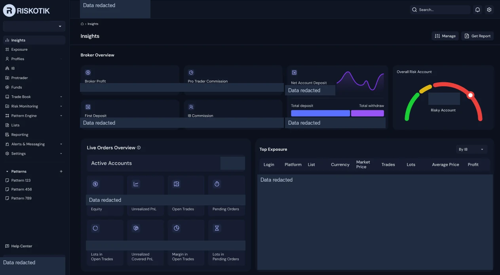
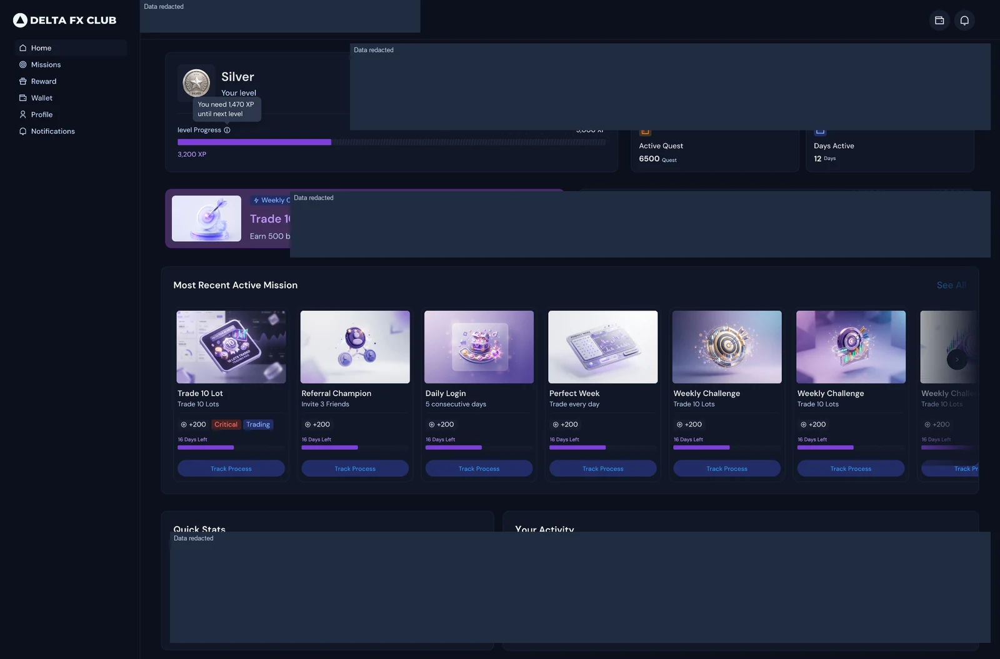
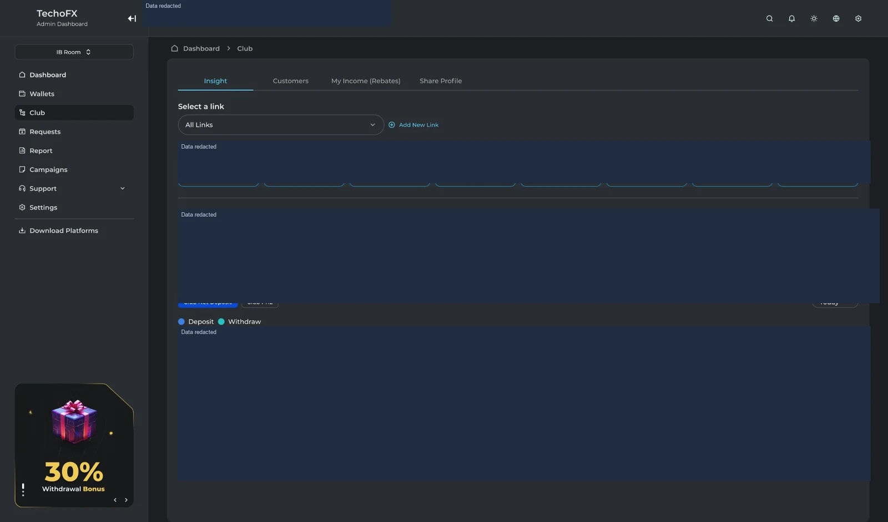
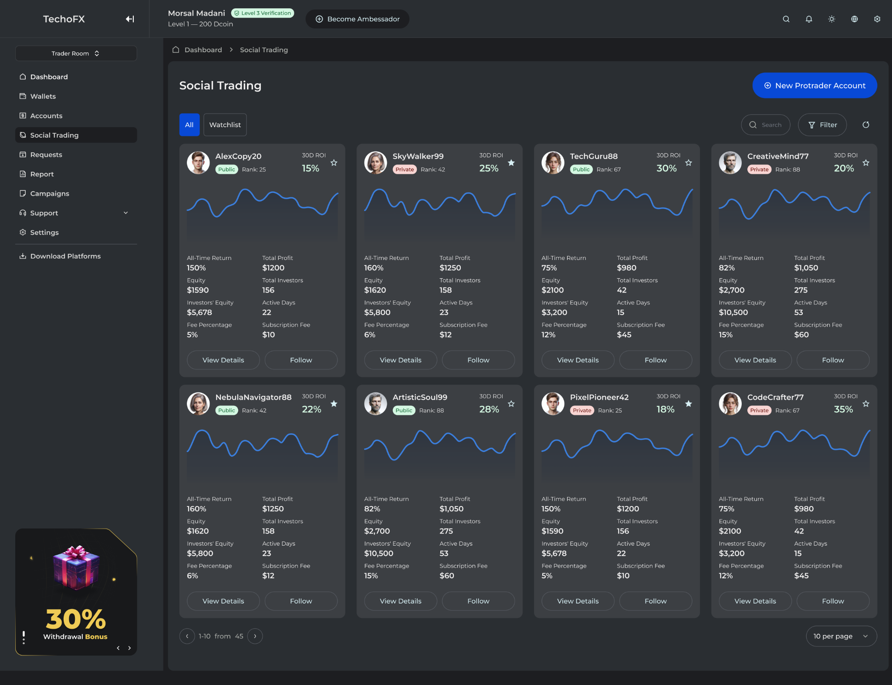
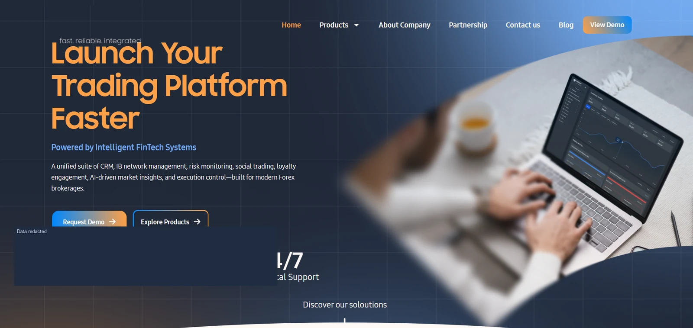
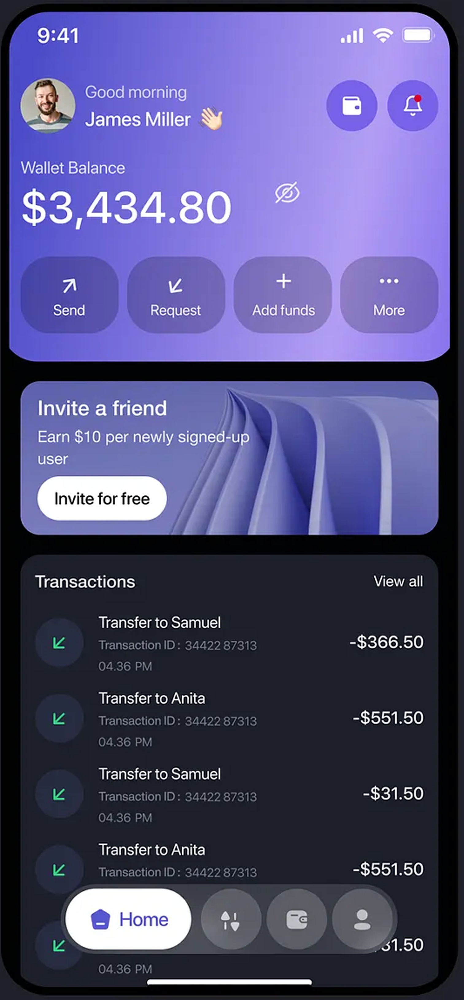
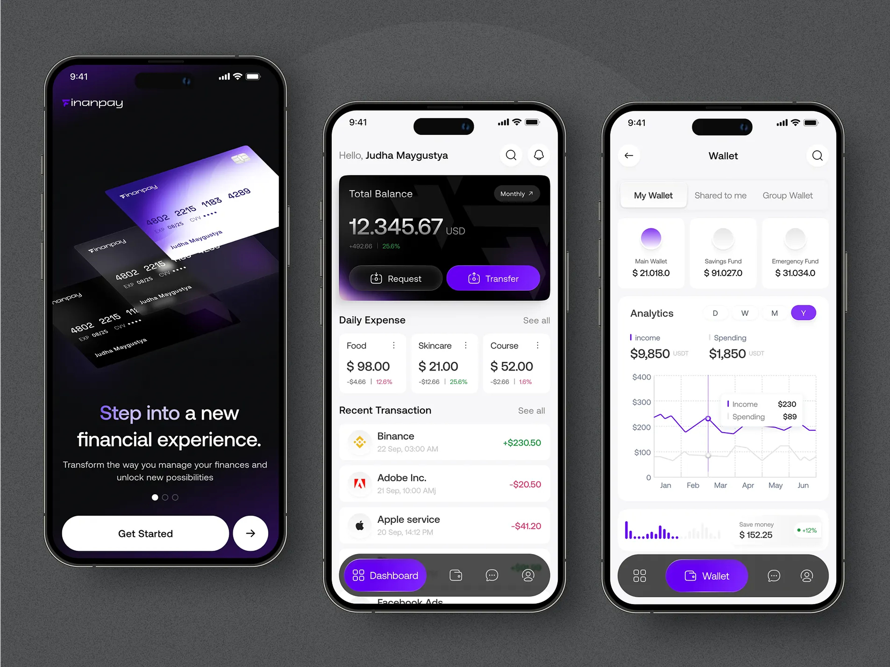

Product interface
Product interfaceFinTech
Brokerage CRM Ecosystem
Product Manager — Discovery, Redesign & Delivery
A replacement brokerage CRM delivered in under eight months with the existing engineering and QA teams.
View case studyComplete Portfolio
Product case studies and concise overviews across FinTech, enterprise software, AI, consumer applications and company websites.
13 product areas · case studies and overviews
Product interfaceProduct Manager — Discovery, Redesign & Delivery
A replacement brokerage CRM delivered in under eight months with the existing engineering and QA teams.
View case study
Product interfaceProduct Owner — End-to-End Product Ownership
End-to-end product ownership of a brokerage platform for exposure analysis, behavior monitoring and operational risk decisions.
View case study
Product interfaceProduct Strategy, Prioritization & Team Leadership
Customer engagement through behavioral segments, quests, levels and governed rewards.
View case study
Product interfaceProduct Roadmaps, Partner Workflows & Team Leadership
Partner networks, multi-level IB structures, commissions and performance analytics.
View case study
Product interfaceProduct Direction, Prioritization & Team Leadership
ProTrader discovery, transparent performance, subscriptions and follower risk controls.
View case study Product interface
Product interfaceProduct Leadership — AI-assisted Decision Support
AI-assisted chart analysis with symbol and timeframe context, keeping trading decisions with the user.
View case study
Hands-on Product Manager — Native Mobile CRM
Native brokerage workflows shaped through close product collaboration with a Flutter developer.
View case studyManaged Product Portfolio
Payment gateway workflows for BEP20 and TRC20 transactions within my managed product portfolio.
View case study Product interface
Product interfaceProduct Owner — Enterprise Onboarding
Employee onboarding workflows defined with HR stakeholders and users.
View case study Product interface
Product interfaceProduct Owner — Evaluation & HR Workflows
Performance reviews, 360-degree feedback, scoring and employee leaderboards.
View case study Product interface
Product interfaceConsumer Product Work
Travel budgeting, shared expenses and individual contributions and balances.
View case study Product interface
Product interfaceBrokerage Website Work
Responsive brokerage web journeys connecting trading information, account actions and managed site content.
View case study
Product interfaceTechnology Website Work
A responsive corporate website with interactive customer journeys and administrative content management.
View case studyMobile-wallet and Finanpay interface examples, shown separately from the Brokerage CRM and payment-product overview.

View full image ↗
View full image ↗